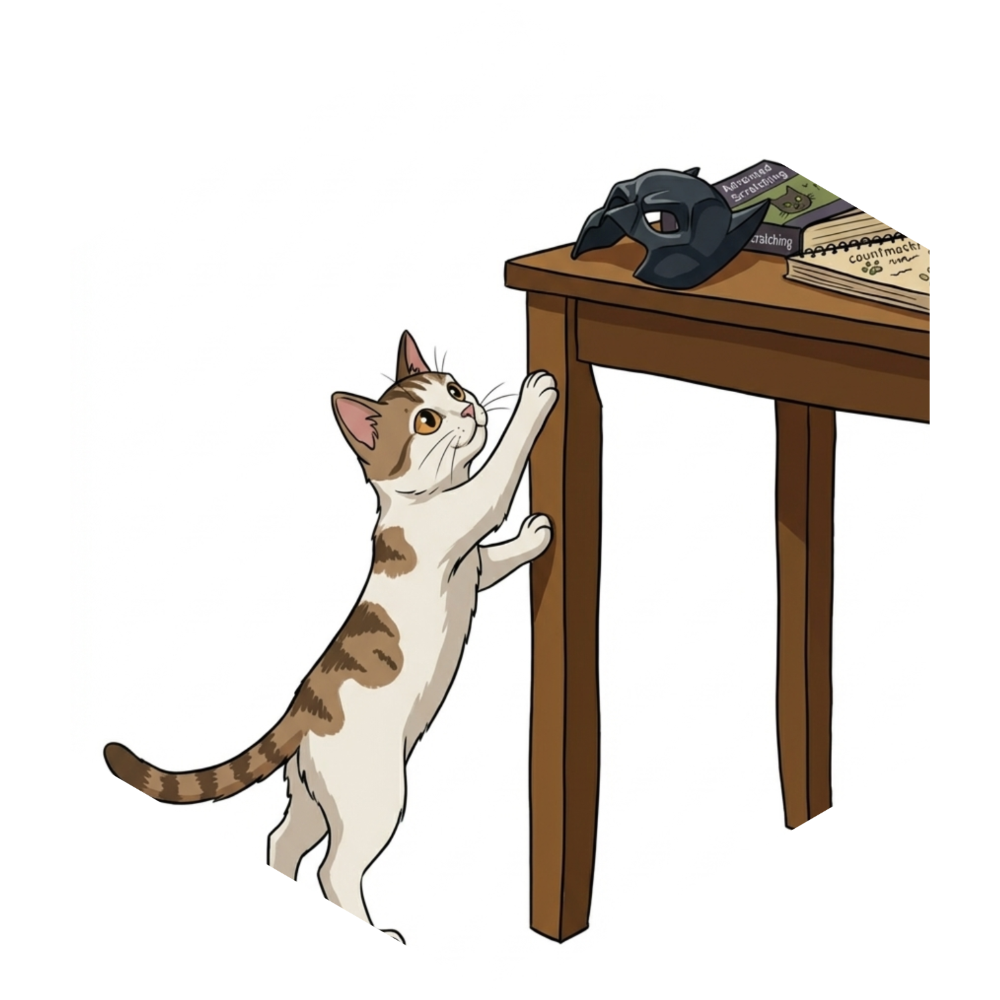

Authors and Citation
Authors
Citation
Master S, Goodwin Davies A, Zelinski A, Shen Q, Bailey C (2026). countmaskr: Small Cell Masking Tool for One- & Two-Way Tabular Reports. R package version 0.1.1, https://query-fulfillment.github.io/countmaskr/.
@Manual{,
title = {countmaskr: Small Cell Masking Tool for One- & Two-Way Tabular Reports},
author = {Sahal Master and Amy {Goodwin Davies} and Allison Zelinski and Qiwei Shen and Charles Bailey},
year = {2026},
note = {R package version 0.1.1},
url = {https://query-fulfillment.github.io/countmaskr/},
}